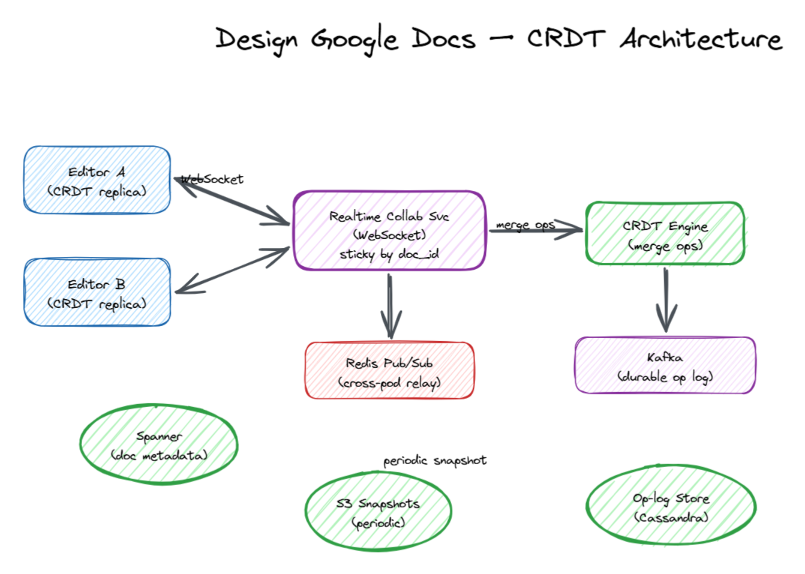

1M concurrent editors typing into the same documents with sub-second peer visibility, offline support, and never-lose-a-keystroke durability — built on CRDTs over WebSockets.
b = bit, B = byte, 1 B = 8 b. 1 KB = 10³ B, 1 MB = 10⁶ B, 1 GB = 10⁹ B, 1 TB = 10¹² B. 1 char = 1 B (UTF-8 ASCII).If Alice and Bob both type at the same position at the same time, naïve last-write-wins loses one of them. The system must let every replica apply ops in any order and converge to the same final document.
| Approach | How it works | Tradeoff |
|---|---|---|
| Operational Transformation (OT) | Ops are insert(pos, char) / delete(pos, len). Server transforms each op against intervening ops to keep positions valid. |
Requires a central server to serialize transforms. Original Google Docs design. |
| CRDT (sequence CRDT, e.g. RGA / Yjs / Automerge) | Each character gets a globally unique, totally ordered ID ((clientId, lamport, fractional-pos)). Ops are commutative — any order works. |
No central serialization needed. Composes with offline edits. Modern Google Docs, Figma, Notion. |
═══════════════════ EDIT PATH (hot, p99 < 1 s) ═══════════════════
Browser A ─┐ WebSocket (CRDT op stream) ┌─ Browser C
(CRDT │ │ (CRDT replica)
replica) ─┤ ├─
▼ ▼
┌──────────────────────────────────────────┐
│ Realtime Collab Server │
│ - sticky session by doc_id │
│ - in-memory CRDT replica per active doc │
│ - fans out ops to peers in the doc │
│ - tracks presence + live cursors │
└──────┬───────────────────────────┬───────┘
│ append ops │ cross-pod relay
▼ ▼
┌──────────────────┐ ┌──────────────────┐
│ Kafka │ │ Redis Pub/Sub │
│ doc.ops.{shard} │ │ doc:{doc_id} │
│ (durable log) │ │ (low latency) │
└──────┬───────────┘ └──────────────────┘
│
▼
┌──────────────────┐
│ Op-log store │ append-only, key=(doc_id, op_seq)
│ Cassandra/Scylla │ 90-day retention
└──────┬───────────┘
│ hourly snapshot
▼
┌──────────────────┐ ┌──────────────────┐
│ Spanner │ │ S3 (snapshots) │
│ (doc metadata, │──►│ gzipped CRDT │
│ snapshot_seq) │ │ state per doc │
└──────────────────┘ └──────────────────┘
═══════════════════ CONTROL PATH ═══════════════════
Browser ─► API Gateway ─► Doc Service ─► Spanner (ACL, title, share)
│
└─► Auth / Permission Service

⬇ Download Interactive Diagram (.excalidraw) ↗ Open in Excalidraw
doc:{doc_id} on Redis to receive ops from the home pod. The home pod is still the source of truth; Redis Pub/Sub is just a fast best-effort bridge.{type:"ins", id:(clientA, lamport=42), after:"id-9", char:"X"}.doc.ops.{shard} for durability.doc:{doc_id} for cross-pod fan-out.snapshot_seq in Spanner, old ops can be truncated.| Table | Engine | Key | Value | Purpose |
|---|---|---|---|---|
documents | Spanner | doc_id | title, owner, acl, snapshot_seq, latest_body_ref | Metadata + snapshot pointer |
doc_ops | Cassandra | (doc_id, op_seq) | op blob (~60 B) | Append-only op log, 90-day retention |
doc_snapshots | S3 | doc_id/{snapshot_seq} | gzipped CRDT state | Fast load on doc-open |
presence | Redis | doc:{doc_id}:users | set of (user, cursor, color, last_seen) | Live cursors, TTL 30 s |
user_docs | Spanner | (user_id, doc_id) | role, last_opened | "My Drive" listing |
documents.snapshot_seq (latest compacted version).doc_ops with op_seq > snapshot_seq (usually < 100 ops).Shard key = doc_id (consistent hashing). Every doc maps to exactly one "home" Collab Server pod via a shard map kept in etcd / ZooKeeper.
op_seq and its unacked ops.> last_seen_seq.doc_comments.| Failure | Impact | Mitigation |
|---|---|---|
| Collab Server pod crashes | Disconnects all sessions on that pod | Clients auto-reconnect; new pod loads CRDT from snapshot + op log; recovery < 5 s |
| Kafka outage | Ops not durably persisted | Local clients keep editing (CRDT); Collab Server buffers in memory + local WAL; replays when Kafka recovers |
| Cassandra outage | Op writes blocked | Same as Kafka — buffer in WAL, alert ops, eventually drain |
| Network partition between two users | They edit independently | CRDT merge on reconnect — no data loss, both edits preserved |
| Concurrent edit at same position | Two chars at "same" spot | (client_id, lamport) tie-break → deterministic order on every replica |
| Snapshotter falls behind | Slow doc loads (many ops to replay) | Multiple snapshotter workers; alert at lag > 1 h |
| Hot doc (10k editors on viral file) | Pod CPU saturates | Auto-promote to leader+relay topology; shed presence updates first |
| Layer | Instances | Per-instance | Total |
|---|---|---|---|
| API Gateway | ~50 pods | 3k QPS | 150k QPS |
| Collab Server (WS + CRDT) | ~500 pods | 2k docs, ~20k users | 1M concurrent users |
| Kafka | ~30 brokers | ~30k msg/s | ~1M ops/s |
| Cassandra (op log) | ~100 nodes, RF=3 | 10k writes/s | 100 TB op data |
| Spanner (metadata) | managed | — | 10⁹ docs |
| S3 (snapshots) | managed | — | 50 TB |
| Redis (presence + relay) | ~20 shards × 2 replicas | 100k ops/s primary | — |
doc_id — fan-out stays in-process for the common case.doc_id). That pod fans out to every other editor and appends the op to Kafka → Cassandra for durability. Every hour a snapshotter compacts ops into a gzipped CRDT state in S3, so opening a doc = "fetch snapshot + replay tail ops". Offline edits accumulate in IndexedDB and merge cleanly on reconnect — that's the CRDT superpower. AP over CP: never block typing; converge eventually. Presence lives in Redis with a 30 s TTL and never touches the database.
Conflict-free Replicated Data Type — concurrent ops from different replicas always converge without coordination.
Alternative to CRDT: a central server rewrites concurrent ops to keep positions consistent.
(counter, clientId) tuple giving a total order across distributed events without clock sync.
A "deleted" marker kept in a CRDT so concurrent inserts after a delete still order correctly.
Load balancer pins one client connection to one backend pod for the lifetime of the session.
Full-duplex TCP-based protocol for low-latency bidirectional messages — used here instead of HTTP polling.
Local append-only log written before acknowledging an op, so a crash can replay anything not yet shipped to Kafka.
Periodically materialized full document state, used to avoid replaying years of ops on doc-open.
Ephemeral metadata about who's currently viewing or editing (cursors, avatars, colors).
Distributing one incoming event to many connected listeners.
doc_idEvery document deterministically maps to one home pod; same idea as Kafka partitioning or DB sharding.
AP = always available, eventually consistent. Docs picks AP because blocking typing is worse than briefly diverging.